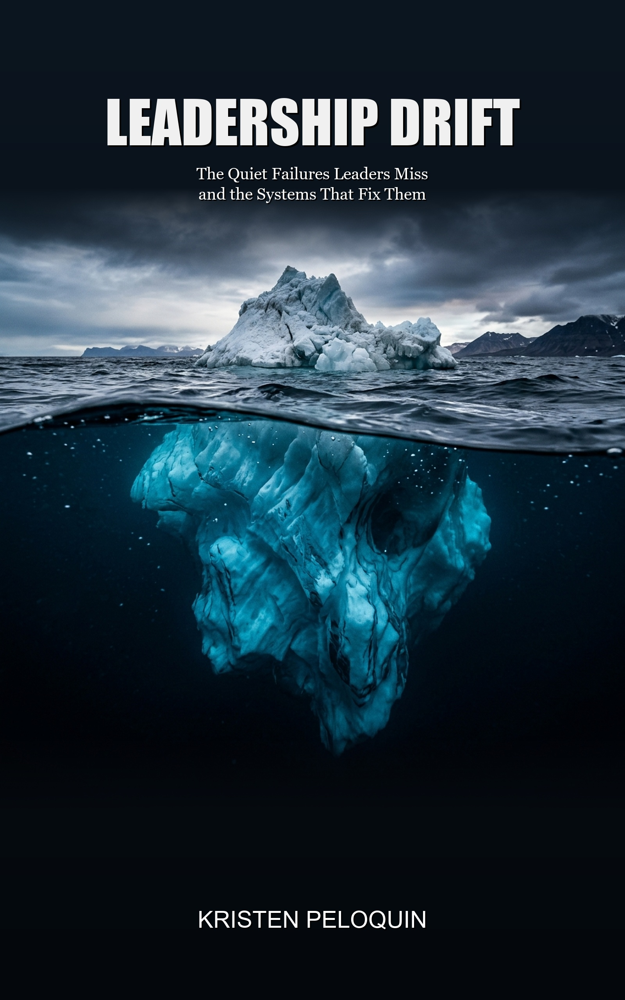

By Kristen Peloquin — Founder & CEO of KLP Consulting Services.

Why do high-performing organizations suddenly find themselves bogged down by execution delays and internal friction? The answer rarely lies in catastrophic failure, but rather in a slow, almost imperceptible process: Leadership Drift.
Drift occurs when daily operational firefighting slowly replaces strategic clarity. Decision rights blur into consensus paralysis, cross-functional handoffs develop chronic friction, and key priorities multiply until teams burn out.
Drawing on more than two decades of senior operational leadership and organizational advisory, Kristen Peloquin delivers both an uncompromising diagnosis of systemic drift and four tangible, repeatable operating frameworks to restore velocity, accountability, and cultural resilience.
Whether you lead an enterprise division, manage a growing team, or are an ambitious professional striving for your next career breakthrough, this field manual provides immediate clarity.
Looking to eliminate executive consensus paralysis, clarify operational ownership, and ensure strategic intent translates into daily execution.
Stuck between top-down strategic demands and frontline bandwidth constraints, seeking practical tools to protect their team's capacity.
Dedicated to building high-retention cultures, curbing burnout caused by ambiguity, and instituting structured feedback loops across teams.
Ambitious individuals and rising talent who want to build executive presence, avoid common management traps, and anchor their career growth to proven operational discipline.
The Facilitator Guide & 4-Phase Implementation Framework for Organizations
While Leadership Drift is designed for use by individual leaders and self-study, The Enterprise Edition is built to activate systemic alignment across organizations. This 43-page implementation handbook equips internal champions, HR executives, and facilitators with structured meeting scripts, room blueprints, and execution frameworks to eliminate operational friction, clarify decision ownership, and re-anchor company culture.
Operational Installation, Not a Classroom Course: Our implementation framework is an active, workplace-integrated roadmap designed to embed working agreements and decision matrices directly into your team's live operating cadence—not an academic lecture or multi-week class.
Our consultants facilitate your leadership sessions—either in-person or virtually—guiding cross-functional alignment, eliminating cross-departmental friction, and arbitrating clear decision architecture for your leadership team.
License the full 43-page guide for internal HR leaders, L&D directors, or division heads to run in-house. Includes direct Train-the-Trainer coaching with our senior team to equip internal facilitators with simulation agendas, session scripts, and psychological safety guidelines before launch.
Room layout blueprints, psychological safety guidelines, and executive intervention tactics to handle dominant voices.
Modular, timed workshop syllabi with exercise prompts covering Chapters 1–5, 6–9, 10–14, and 15–19.
Print-ready, high-resolution worksheets: Decision Rights Matrix, Priority Kill Switch, Feedback Log, Seam Audit, and Behavioral Contracts.
Phase 1: Friction Audit • Phase 2: Alignment Offsite • Phase 3: Escalation Standard • Phase 4: Cadence Handover.